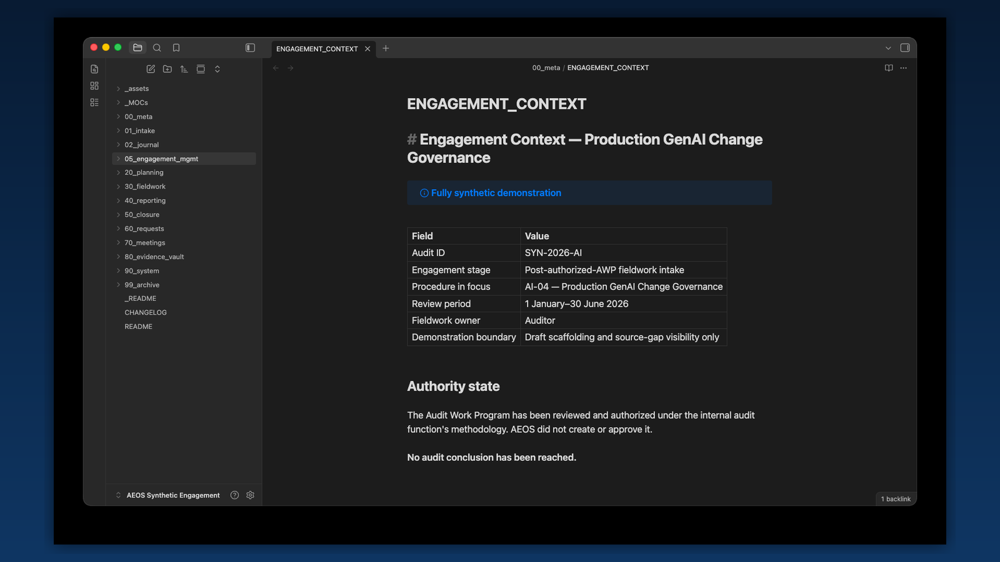
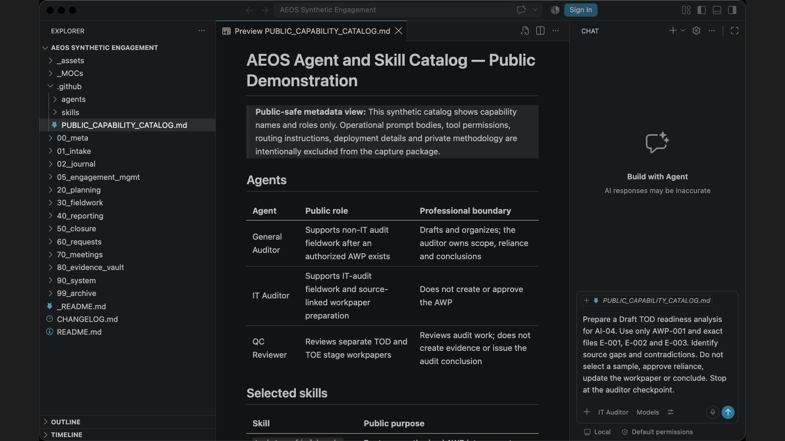
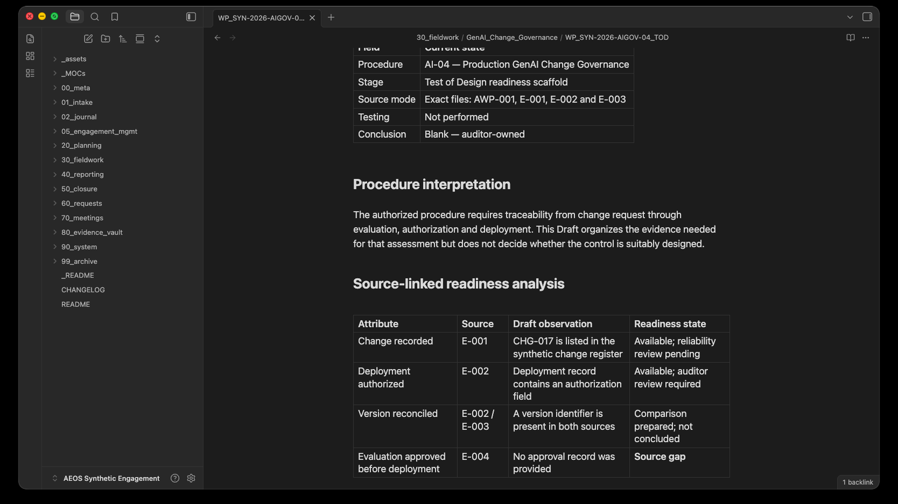
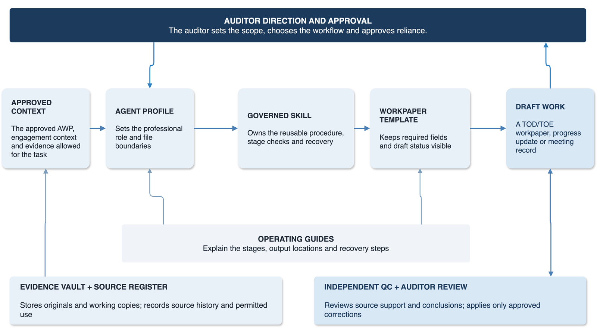
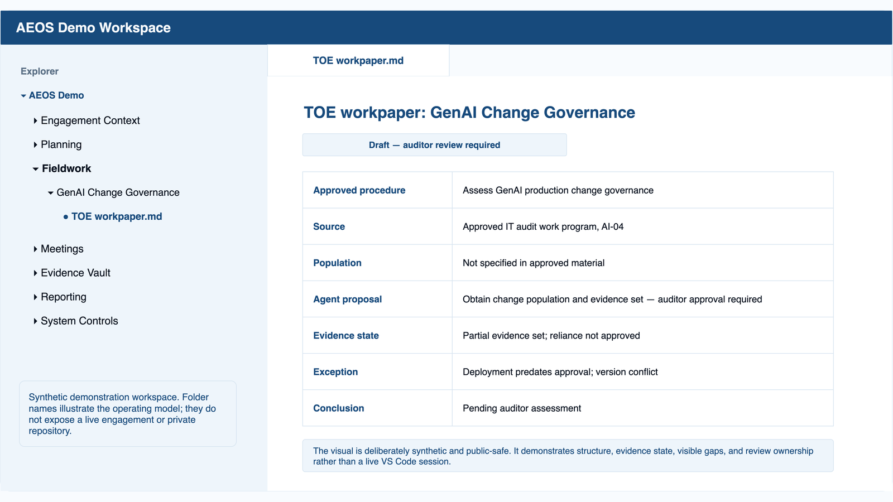

Give the engagement a shared operating structure.
AEOS gives the auditor and AI one visible place for context, source boundaries, procedures, evidence, draft outputs and review decisions.
AI-Augmented Engagement Operating System
AEOS is a file-based operating system for auditors working with AI. It turns an audit work program (AWP) into a controlled route for evidence, testing, workpapers and reporting drafts without losing the audit trail.
AEOS in 30 seconds
AEOS gives the auditor and AI one visible place for context, source boundaries, procedures, evidence, draft outputs and review decisions.
It covers fieldwork preparation, meetings, evidence handling, Test of Design, Test of Operating Effectiveness, quality review and reporting drafts.
AEOS prepares structured drafts, keeps source links and open gaps visible, and applies consistent routes and review points across comparable work.
How it works
The components have distinct jobs. The workspace holds the engagement, the profile sets the professional role, the workflow skill controls the task, and the auditor authorizes each reliance decision.
Engagement inputs flow into the AEOS operating core, which creates draft audit work that proceeds through human review gates.
Engagement inputs
AEOS operating core
Draft audit work
Human decisions
The model can interpret, compare, test and draft within the authorized boundary. It cannot expand scope, approve reliance or communicate a result on its own.
How AEOS supports the auditor
AEOS takes on repeatable preparation, organization, comparison and drafting tasks. This is intended to improve quality, consistency and efficiency. The auditor still decides what the evidence means and whether the work may move forward.
What AEOS supports
Capabilities describe the work the auditor can perform. They are different from the files and components that make the work possible.
Register the AWP, criteria, source set, file boundaries and working folders.
Create workpaper scaffolds, walkthrough agendas, evidence requests and the Week 1 plan.
Perform the planned Test of Design procedure against authorized evidence and record gaps or contradictions.
Prepare the population and sample for approval, then test each item and attribute against the expected evidence.
Review TOD and TOE separately, verify corrections and merge only approved changes.
Draft progress and reporting material, then review reusable and engagement-specific lessons.
See AEOS in action
These four public-safe captures follow the same GenAI change-governance scenario in Obsidian and Visual Studio Code. The application interfaces remain unchanged; the surrounding frame belongs to the AEOS website. Select any image to open it at full size.
Obsidian

Visual Studio Code

Visual Studio Code

Obsidian

What AEOS includes
AEOS runs in Visual Studio Code and Obsidian. There is no separate backend. The product is the configured workspace and the governed routes inside it.
| Component | Job | Relationship |
|---|---|---|
| Engagement workspace | Holds context, plans, evidence references, workpapers, reviews and reporting drafts. | The shared environment used by every other component. |
| Three auditor profiles | Set the professional perspective and operating boundaries for General Audit, IT Audit and QC. | A person selects the profile before invoking a workflow. |
| Governed workflow skills | Define the inputs, sequence, checks, stop conditions and output for a specific audit task. | The selected profile executes one skill against the approved context. |
| Prompts and commands | Give the auditor a repeatable way to start each supported route. | They call the owning skill; they do not create a competing workflow. |
| Templates and guides | Provide readable output structures and operator instructions. | Skills use the templates; auditors use the guides and review the result. |
| Evidence and review controls | Track sources, provenance, draft state, corrections, gaps and human approvals. | They sit across every route and prevent draft output from becoming silent authority. |
| Python checks | Validate structure, paths, packaging and other deterministic properties. | They support the workflow but do not decide audit evidence or conclusions. |

Scope and authority
Requirements
The workspace remains readable and portable. Native originals stay linked and authoritative, while information used by AEOS agents and workflows is provided in reviewed Markdown working copies.
AEOS supports defined provider routes rather than generic model independence. The auditor chooses an approved route, then selects a model with the context, source-mapping, structured-output and file-tool capability required for the task.

Common questions
AEOS
{kind=link}
{kind=link}
{kind=link}